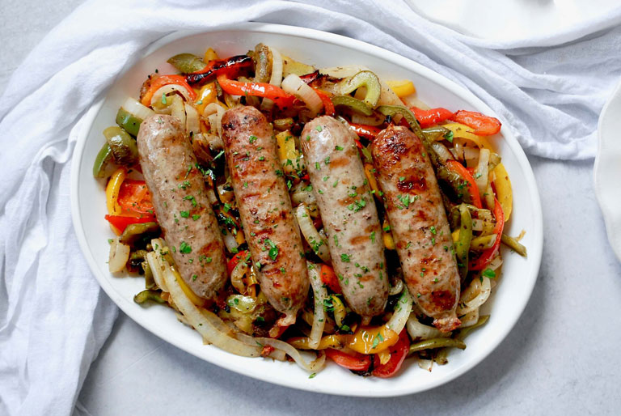

Italian Sausage and Peppers

Description
c/o spicysouthernkitchen.com
This italian sausage and peppers dish is a sure to water mouths time and time again! Pair with
wine for an unforgettable evening with that special someone!
Ingredients
- 2 tablespoons Vegetable oil;
- 1 package Johnsonville Naturals Mild Italian Sausage;
- 1 green pepper, thinly sliced;
- 1 red pepper, thinly sliced;
- 2 sweet onions, thinly sliced;
- 2 cloves garlic, minced;
- 1 tablespoon tomato paste;
- 1 (14.5-ounce) can diced tomatoes;
- 1/2 teaspoon salt;
- 1/2 teaspoon dried oregano;
- 1/2 teaspoon dried basil;
- 1/4 teaspoon black pepper; and
- 1/4 teaspoon red pepper flakes.
Steps
- Add vegetable oil to a large pan and heat over medium-high heat. Add sausages and cook until browned on all sides. Remove sausage from pan and set aside (Note: You do not need to cook it through at this point.);
- Add onion and peppers to grease left in pan and cook over medium heat until softened. Add garlic and cook for 1 minute;
- Slice sausage into 1 to 1 1/2-inch pieces;
- Return sausage to pan along with all other ingredients;
- Cook for 5 to 10 minutes, until sausage is cooked through and sauce is thickened; and
- Serve on hoagie rolls if desired.